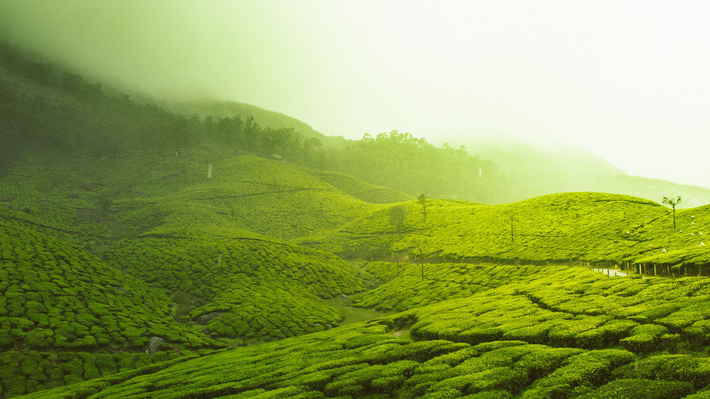

TRAVEL SPEAK
×
THINGS TO DO IN KERALA
INTERESTS

Food and drink
Beaches and islands
Arts and culture
Wildlife
Health and wellness
ACTIVITIES
Adventure and sports
Events and festivals
Aboriginal experiences
Seasonal travel
Youth travel and backpacking
TRIPS AND ITINERARIES
7 - 10 day itineraries
Two-week itineraries
Drives and road trips
Local recommendations
Backpacker road trips